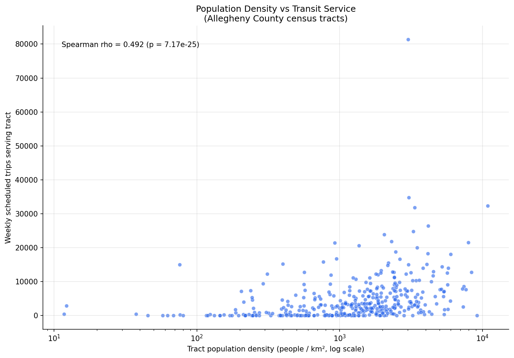
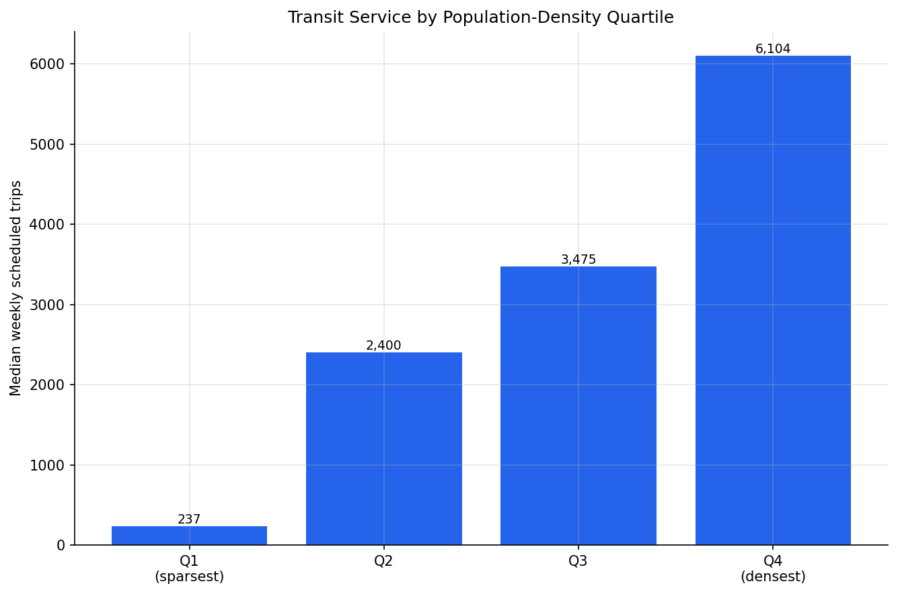
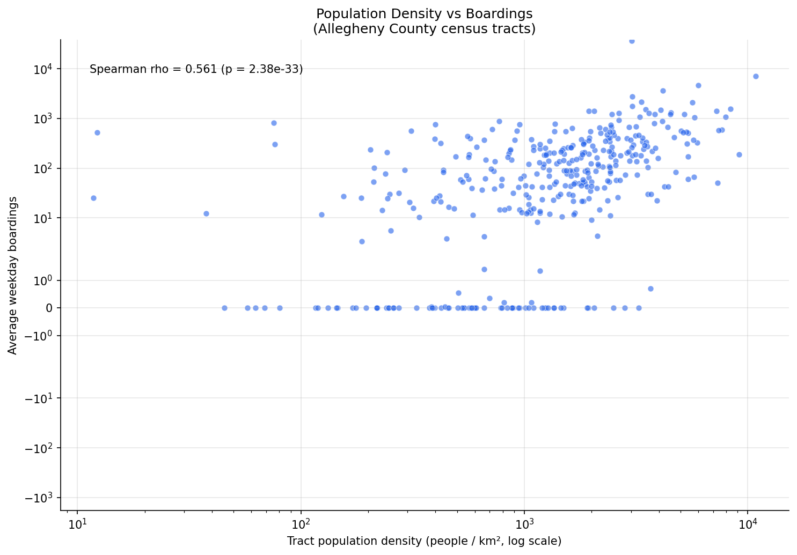
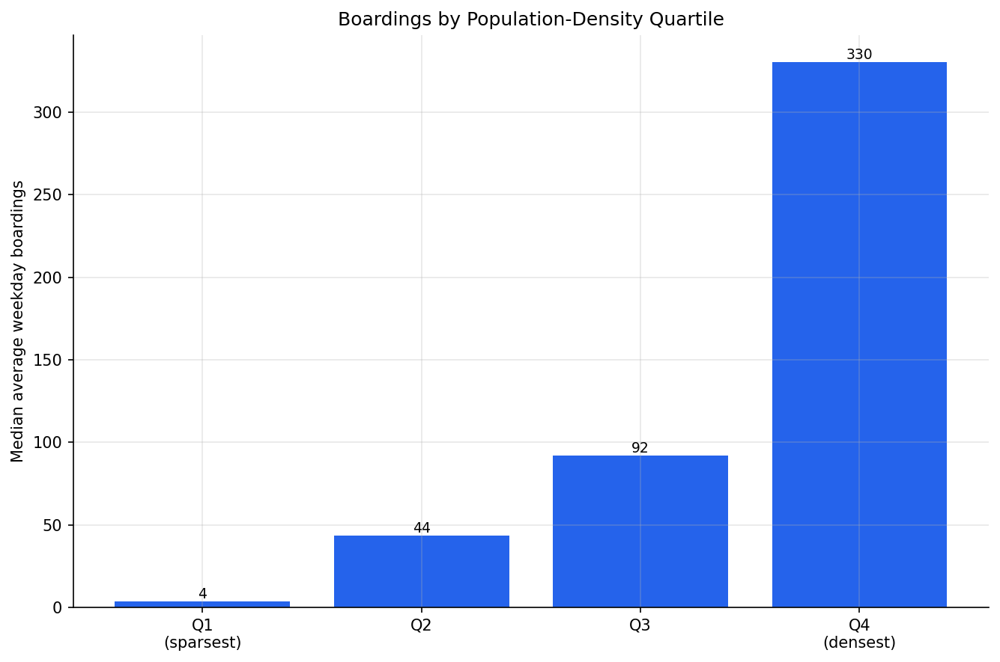
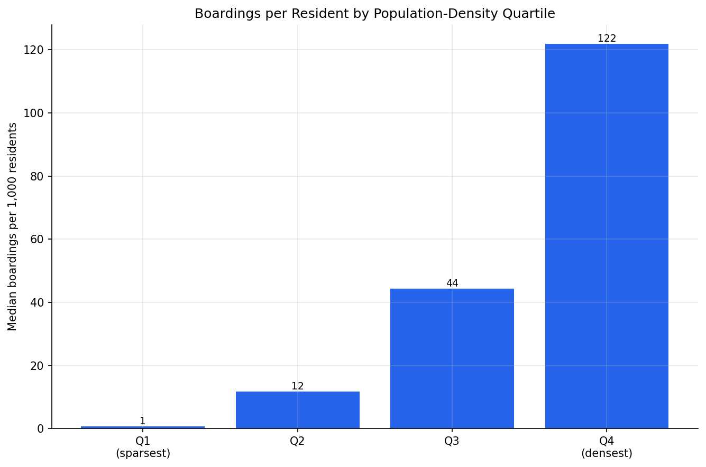
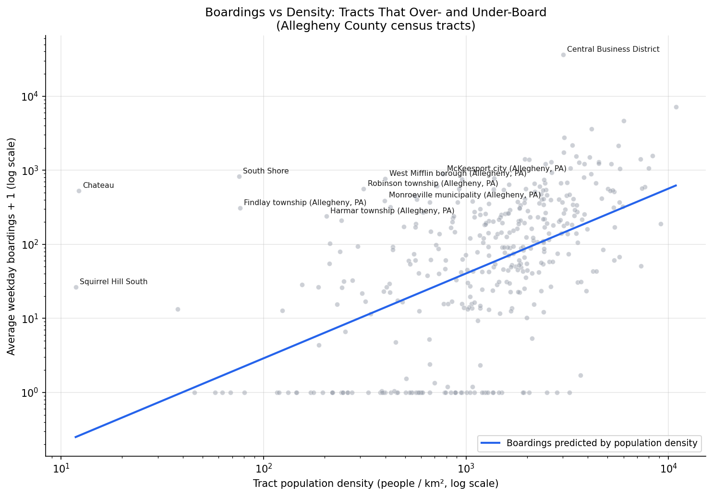

Analysis
49 - Transit Service & Boardings vs Population Density
Equity and Strategic Planning
Coverage: Coverage window unavailable for this page.
Built 2026-05-15 22:19 UTC · Commit 50b1002
Page Navigation
Analysis Navigation
Data Provenance
flowchart LR
49_transit_service_density(["49 - Transit Service & Boardings vs Population Density"])
f1_49_transit_service_density[/"data/bus-stop-usage/wprdc_stop_data.csv"/] --> 49_transit_service_density
t_route_stops[("route_stops")] --> 49_transit_service_density
01_data_ingestion[["Data Ingestion"]] --> t_route_stops
u1_01_data_ingestion[/"data/routes_by_month.csv"/] --> 01_data_ingestion
u2_01_data_ingestion[/"data/PRT_Current_Routes_Full_System_de0e48fcbed24ebc8b0d933e47b56682.csv"/] --> 01_data_ingestion
u3_01_data_ingestion[/"data/Transit_stops_(current)_by_route_e040ee029227468ebf9d217402a82fa9.csv"/] --> 01_data_ingestion
u4_01_data_ingestion[/"data/PRT_Stop_Reference_Lookup_Table.csv"/] --> 01_data_ingestion
u5_01_data_ingestion[/"data/average-ridership/12bb84ed-397e-435c-8d1b-8ce543108698.csv"/] --> 01_data_ingestion
t_routes[("routes")] --> 49_transit_service_density
01_data_ingestion[["Data Ingestion"]] --> t_routes
t_stops[("stops")] --> 49_transit_service_density
01_data_ingestion[["Data Ingestion"]] --> t_stops
t_census_tracts[("census_tracts")] --> 49_transit_service_density
d1_49_transit_service_density(("geopandas (lib)")) --> 49_transit_service_density
d2_49_transit_service_density(("polars (lib)")) --> 49_transit_service_density
d3_49_transit_service_density(("scipy (lib)")) --> 49_transit_service_density
classDef page fill:#dbeafe,stroke:#1d4ed8,color:#1e3a8a,stroke-width:2px;
classDef table fill:#ecfeff,stroke:#0e7490,color:#164e63;
classDef dep fill:#fff7ed,stroke:#c2410c,color:#7c2d12,stroke-dasharray: 4 2;
classDef file fill:#eef2ff,stroke:#6366f1,color:#3730a3;
classDef api fill:#f0fdf4,stroke:#16a34a,color:#14532d;
classDef pipeline fill:#f5f3ff,stroke:#7c3aed,color:#4c1d95;
class 49_transit_service_density page;
class t_census_tracts,t_route_stops,t_routes,t_stops table;
class d1_49_transit_service_density,d2_49_transit_service_density,d3_49_transit_service_density dep;
class f1_49_transit_service_density,u1_01_data_ingestion,u2_01_data_ingestion,u3_01_data_ingestion,u4_01_data_ingestion,u5_01_data_ingestion file;
class 01_data_ingestion pipeline;
Findings
Findings: Transit Service & Boardings vs Population Density
Summary
Bus service scales strongly with residential density — denser Allegheny County tracts get far more service, not just a nearer stop (Spearman ρ = 0.49 between density and weekly bus trips). Boardings follow the same density gradient (ρ = 0.56) and track service almost perfectly (ρ = 0.90), but they diverge sharply from raw population: a tract's headcount barely predicts its boardings (ρ = −0.14), and boardings are far more concentrated than people — the densest quartile of tracts holds 23% of residents but generates 73% of boardings, and Downtown alone accounts for 27%.
Key Numbers
- 394 tracts analyzed (386 populated), Allegheny County. 139,221 average weekday boardings total (Sept 2019), of which 138,780 fall inside a tract.
- Service vs density: Spearman ρ = 0.49 (p ≈ 7e-25). Median weekly bus trips by density quartile: 237 → 2,400 → 3,475 → 6,104 — a ~26× rise from the sparsest to the densest quarter of tracts.
- Boardings vs density: Spearman ρ = 0.56 (p ≈ 2e-33). Median weekday boardings by quartile: 3.8 → 44 → 92 → 330.
- Boardings vs population: Spearman ρ = −0.14 — essentially no relationship. Boardings vs service: ρ = 0.90.
- Boardings per 1,000 residents by density quartile: 0.7 → 12 → 44 → 122 — a ~180× gradient, far steeper than the service gradient.
- Concentration: the densest quartile (22.7% of county population) produces 72.9% of boardings; the top 10 tracts produce 46.6%; the Central Business District alone produces 26.6%.
Observations
- Q1 — service tracks density. Service is not just present in dense tracts, it is concentrated there. The 26× quartile gradient in weekly trips is steeper than the proximity gradient Analysis 46 found, so the answer is unambiguous: dense neighborhoods get both a closer stop and much more service on it.
- Q2 — boardings follow density but diverge from population. Boardings rise with density at almost the same rank-correlation strength as service, and they shadow service itself extremely closely (ρ = 0.90). But the relationship is strongly super-linear: boardings per resident climb ~180× across density quartiles, so dense tracts board far more than their share of people. Raw population is a non-predictor (ρ = −0.14) because census tracts are drawn to hold roughly equal populations — what varies is density and destination role.
- The biggest over-performers are destinations, not dense housing. The Central Business District boards 36,202 riders a day — 27% of the county total — against only ~142 predicted by its (moderate) residential density. Other large over-performers are near-empty riverfront/industrial tracts (Chateau, 12 residents; South Shore, 47) and the airport-area Findlay township. Boardings are recorded where trips start, which concentrates them at employment and activity hubs.
- The under-performers are the light-rail South Hills. The tracts that board
far below their density (Bethel Park, Castle Shannon, Mount Lebanon) are
light-rail-served: their residents board the "T", which the bus-stop dataset
does not cover. These are flagged
rail_servedin the output.
Discussion
Analysis 46 showed PRT puts stops where the people are. This analysis shows the same logic governs service volume: dense tracts get disproportionately more bus service, and riders respond — boardings follow service almost one-for-one. In that sense boardings do not diverge from the density pattern; they amplify it.
The divergence is one of degree and driver. Boardings are far more unequal than either population or service: they are destination-driven, so they pile up in a handful of dense activity centers — above all Downtown — rather than spreading across residential tracts in proportion to headcount. A planner reading this should note that "serve the dense places" and "serve the most residents" are not the same instruction: the boarding map is dominated by where people go, not only where they live.
This is an area-level (ecological) association. It does not show that individuals in dense tracts ride more — only that dense tracts, as places, generate more boardings.
Caveats
- Bus-only. The WPRDC stop-usage dataset covers bus and busway service;
light rail has boarding data for a single stop. Both the service and the
boardings metrics are therefore restricted to bus service. Light-rail-corridor
tracts (notably the South Hills) genuinely show near-zero bus boardings
because their riders use the "T"; they are flagged
rail_served. - Temporal mismatch. Boardings are September 2019; bus trip counts are the current GTFS snapshot; population is the ACS 2018–2022 estimate. The analysis assumes the spatial pattern is stable, not that levels are contemporaneous.
- Stop-to-tract assignment is point-in-polygon. A stop on a tract boundary counts entirely for one tract. Highland Park is the clearest artifact: it has 1,580 weekly bus trips but ~0 recorded boardings because its service runs on perimeter corridors assigned to neighboring tracts and its interior is largely parkland.
weekly_tripscounts scheduled trips, not capacity or time-of-day frequency.- Zero-population tracts are excluded from quartiles and correlations.
Validation
- Data sources verified.
route_stops,routes,stops, andcensus_tractscolumns checked against the live schema; the boardings CSV schema inspected directly (long format,datekey/serviceday/avg_ons). - System total checked. Summed boardings = 139,221 average weekday boardings, consistent with PRT's known ~130–135k pre-pandemic weekday ridership. Tract count (394) matches Analysis 46.
- Scope checked. Only 26 service / 35 boardings stops fall outside all Allegheny tracts — a small, expected edge effect (stops just over county/state lines).
- Surprising result investigated. Tracts with high service but zero boardings were traced to a data-source limitation: the bus-stop-usage dataset excludes light rail (1 rail stop present vs 98 in the network). The service metric was restricted to bus service to match, and rail-served tracts are flagged rather than silently treated as poorly-used.
- Direction of effects checked. Service-vs-density and boardings-vs-density correlations are both positive, consistent with Analysis 46; the near-zero boardings-vs-population correlation is explained by census tracts being drawn to roughly equal population.
- Ecological framing applied throughout — results describe tracts, not individuals.
Output

Scatter of tract population density against weekly scheduled bus trips, annotated with the Spearman correlation.

Bar chart of median weekly bus trips by population-density quartile.

Scatter of tract population density against average weekday boardings, annotated with the Spearman correlation.

Bar chart of median average weekday boardings by population-density quartile.

Bar chart of median boardings per 1,000 residents by population-density quartile.

Log-log scatter of boardings against density with the fitted line and labeled over-boarding outlier tracts.
No interactive outputs declared.
Per-tract population, density, weekly bus trips, boardings, boardings per 1,000 residents, density quartile, rail-served flag, and density-predicted boardings with residual.
Preview CSV
Tracts that board most above and below what their population density predicts.
Preview CSV
Median density, weekly trips, boardings, and boardings per 1,000 residents by population-density quartile.
Preview CSV
Methods
Methods: Transit Service & Boardings vs Population Density
Question
Analysis 46 showed that denser Allegheny County census tracts sit closer to a PRT stop — routes are placed near high-density areas. Two follow-up questions:
- Service. Does the amount of transit service at a tract scale with its population density, or do dense areas just get a nearby stop without correspondingly more service?
- Boardings. Do boardings follow the same density gradient, or do they diverge from residential population density?
The unit of analysis is the census tract, mirroring Analysis 46 so the three gradients (proximity, service, boardings) are directly comparable.
Approach
- Tracts. Load Allegheny County tracts (
county_fips = '003') fromcensus_tractsviaprt_otp_analysis.walksheds.load_tracts(polygons in EPSG:32617, meters). Population density =population / land_area_km2. - Service. From
route_stops, sumtrips_7d(weekly scheduled trips) across all routes and directions at each stop. Point-in-polygon assign each stop to its tract and sum to get weekly scheduled trips serving the tract. - Boardings. From the WPRDC bus-stop-usage data, take the pre-pandemic
weekday snapshot (
datekey = 201909,serviceday = Weekday), sumavg_onsacross routes per physical stop, assign stops to tracts, and sum to get average weekday boardings within the tract. - Spatial join. Stops are matched to tracts with a point-in-polygon join
(
geopandas.sjoin,predicate="within"). Tracts with no stops keep a true zero for service and boardings rather than being dropped. - Correlation. Spearman rank correlation of population density against (a) weekly trips and (b) boardings, plus a population-density-quartile gradient for each. Expected sign is positive — denser tracts better served.
- Divergence (Q2). Compare boardings against population as well as density: per-1,000-resident boarding rate by density quartile, a log-log regression of boardings on population, and the tracts with the largest positive/negative residuals — those that board far above or below what their resident population predicts.
Data
census_tracts(prt.db) —geoid,county_fips,population,land_area_m2, tract polygon. Filtered to Allegheny County.route_stops(prt.db) —stop_id,trips_7d(weekly scheduled trips).stops(prt.db) —stop_id,lat,lon. Null coordinates excluded.data/bus-stop-usage/wprdc_stop_data.csv— WPRDC stop-level boardings. Slice used:datekey = 201909,serviceday = Weekday(pre-pandemic);avg_onsis average daily boardings; the CSV carries its ownlatitude/longitudeper stop.
Output
output/tract_service_boardings.csv— per tract: population, density, weekly trips, boardings, boardings per 1,000 residents, density quartile, population-predicted boardings, and regression residual.output/boardings_outlier_tracts.csv— tracts that board most above and below what their population predicts.output/quartile_summary.csv— per-density-quartile medians.output/density_vs_service.png— scatter of density vs weekly trips.output/service_by_density_quartile.png— median weekly trips by quartile.output/density_vs_boardings.png— scatter of density vs boardings.output/boardings_by_density_quartile.png— median boardings by quartile.output/boardings_per_capita_by_quartile.png— median boardings per 1,000 residents by quartile (the divergence visual).output/boardings_vs_population_residuals.png— log-log boardings vs population with fitted line and labeled outlier tracts.
Caveats
- Results are area-level (ecological) associations: they describe census tracts, not individual residents or their travel behavior.
- Temporal mismatch. Boardings are September 2019;
route_stopstrip counts are the current GTFS snapshot; ACS population is the 2018–2022 5-year estimate. The analysis assumes the spatial pattern of density, service, and ridership is reasonably stable across this window even though absolute levels are not contemporaneous. This is the largest caveat. - A boarding is recorded where a trip starts, which is weighted toward employment and activity centers (Downtown, Oakland) as well as residences — so a gap between boardings and residential density is expected, and is the point of the divergence analysis rather than a data flaw.
weekly_tripscounts scheduled trips, not vehicle capacity or time-of-day frequency: many low-frequency stops can sum to the same value as one high-frequency stop.
Source Code
|
Sources
| Name | Type | Why It Matters | Owner | Freshness | Caveat |
|---|---|---|---|---|---|
| data/bus-stop-usage/wprdc_stop_data.csv | file | Stop-level ridership with lat/lon, used to sum average weekday boardings per census tract. | Local project data owner not specified. | Snapshot file; refresh by rerunning its pipeline step. | May lag upstream source updates. |
| route_stops | table | Primary analytical table used in this page's computations. | Produced by Data Ingestion. | Updated when the producing pipeline step is rerun. | Coverage depends on upstream source availability and ETL assumptions. |
Upstream sources (5)
|
|||||
| routes | table | Primary analytical table used in this page's computations. | Produced by Data Ingestion. | Updated when the producing pipeline step is rerun. | Coverage depends on upstream source availability and ETL assumptions. |
Upstream sources (5)
|
|||||
| stops | table | Primary analytical table used in this page's computations. | Produced by Data Ingestion. | Updated when the producing pipeline step is rerun. | Coverage depends on upstream source availability and ETL assumptions. |
Upstream sources (5)
|
|||||
| census_tracts | table | Primary analytical table used in this page's computations. | Project pipeline owner not linked. | Refresh cadence unknown. | Coverage depends on upstream source availability and ETL assumptions. |
| geopandas | dependency | Runtime dependency required for this page's pipeline or analysis code. | Open-source Python ecosystem maintainers. | Version pinned by project environment until dependency updates are applied. | Library updates may change behavior or defaults. |
| polars | dependency | Runtime dependency required for this page's pipeline or analysis code. | Open-source Python ecosystem maintainers. | Version pinned by project environment until dependency updates are applied. | Library updates may change behavior or defaults. |
| scipy | dependency | Runtime dependency required for this page's pipeline or analysis code. | Open-source Python ecosystem maintainers. | Version pinned by project environment until dependency updates are applied. | Library updates may change behavior or defaults. |